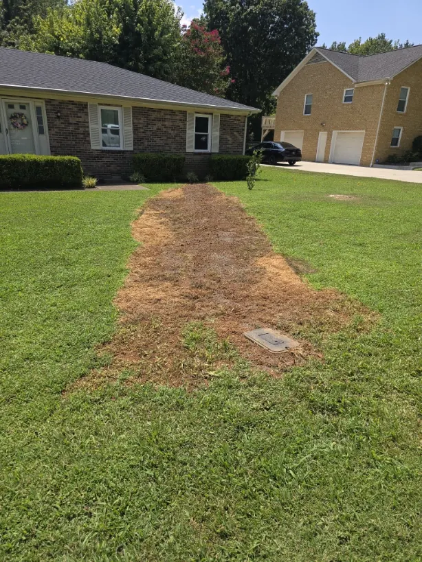

The pipes connecting your home to the municipal water and sewer lines in the street are critical components of your plumbing system, yet they’re often out of sight and out of mind—until a costly failure occurs. Repairing or replacing these underground lines can be a significant headache. Understanding what causes these failures is the first step toward prevention.
The Common Culprits of Underground Pipe Damage
Water service lines (bringing clean water in) and sewer laterals (taking wastewater out) are susceptible to a variety of environmental and physical stresses that can lead to leaks, cracks, and full-blown collapses.
1. Tree Root Intrusion 🌳
This is perhaps the most notorious culprit for sewer line failure. Tree roots are constantly seeking moisture, and the minuscule cracks and leaky joints in underground pipes are a powerful beacon. Once roots find a way in, they grow, expanding the crack, forming blockages, and eventually crushing or segmenting the pipe.
2. Age and Corrosion ⏳
Older homes often have pipes made of less durable materials like cast iron or clay, which naturally deteriorate over time. Cast iron corrodes (rusts), weakening the pipe walls. Clay pipes, while durable, are often installed in short segments with joints that shift and allow for root intrusion or collapse due to ground movement.
3. Ground Shifting and Soil Movement 🏗️
External pressure from the environment is a major factor. The ground around your pipes is constantly shifting due to:
- Temperature extremes: Freezing and thawing cycles cause soil to expand and contract, putting immense stress on rigid pipes.
- Heavy loads: The weight of vehicles, patios, or even new construction can crush or crack pipes buried beneath.
- Drought and Rain: Severe drought causes the soil to shrink and settle, while heavy rain saturates the ground, leading to soil erosion that can leave pipes unsupported and vulnerable to breakage.
4. Improper Installation 🛠️
In some cases, the original installation may have laid the groundwork for future failure. Pipes that lack proper bedding or support, or are installed without the correct slope, can become weak or suffer repeated clogs that create internal pressure, leading to breaks.
Angle Stop Plumbing's Solution: The Pipe Casing Advantage
When you choose Angle Stop Plumbing for line repair or replacement, we don't just fix the immediate problem—we implement a strategy designed to protect your investment for decades to come. Our preferred method for future-proofing your lines involves the strategic use of pipe casings.
What are Pipe Casings?
A pipe casing is essentially a protective, larger-diameter outer sleeve made from highly durable material (often steel or high-density polyethylene, HDPE) that is installed to encase and shield the main water or sewer line that runs through it.
How Casings Minimize Future Damage
Angle Stop Plumbing utilizes pipe casings as a robust protective barrier, offering several key advantages over traditional replacement methods:
Cause of Damage
How Pipe Casings Provide Protection
Tree Root Intrusion
The casing creates a solid, impenetrable shield, completely preventing roots from reaching the actual water or sewer line.
Ground Shifting/External Pressure
The strong outer casing acts as a structural reinforcement, absorbing and distributing external loads from shifting soil, traffic, and construction. This prevents the functional pipe inside from being crushed or cracked.
Corrosion/Soil Contact
The casing pipe isolates the functional inner pipe from corrosive elements (like certain soil types or groundwater) and harsh temperatures, significantly extending its lifespan.
Maintenance Access
If the inner pipe ever needs servicing, the casing facilitates easier and less invasive repair work because the pipe has a clear pathway, reducing the need for extensive digging or trenching.
By installing a durable pipe casing, Angle Stop Plumbing provides a proactive layer of defense, turning an exposed utility into a protected conduit. This superior method dramatically reduces the risk of recurring problems, offering you greater peace of mind and long-term savings on future repairs.
Don't wait for a costly line break to strike. If you have an older home or suspect your lines are vulnerable, contact Angle Stop Plumbing today for a professional inspection and to learn more about protecting your property with the strength of pipe casings!